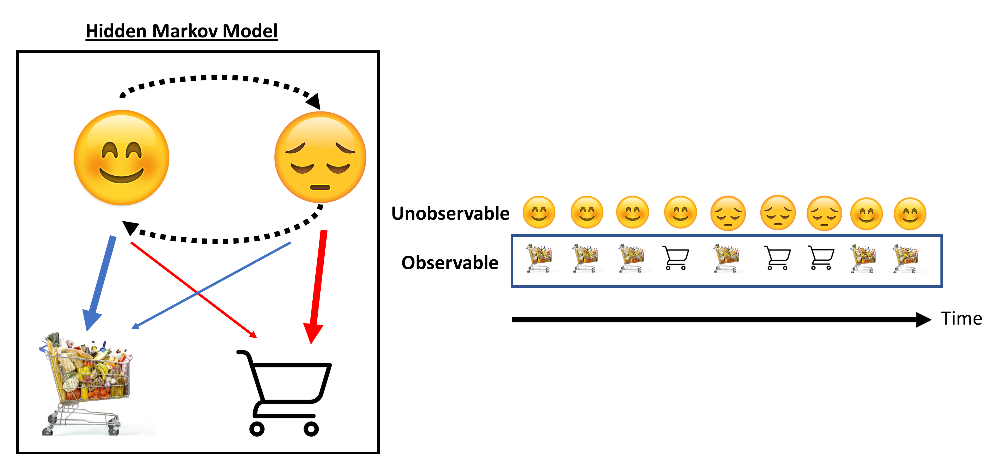
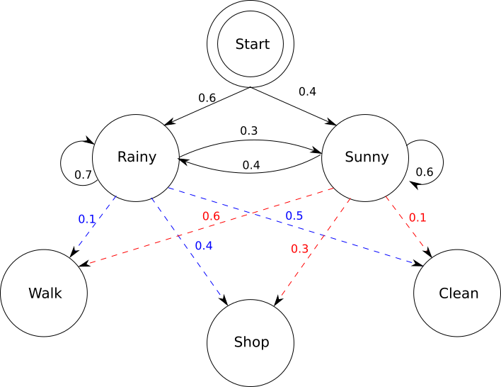
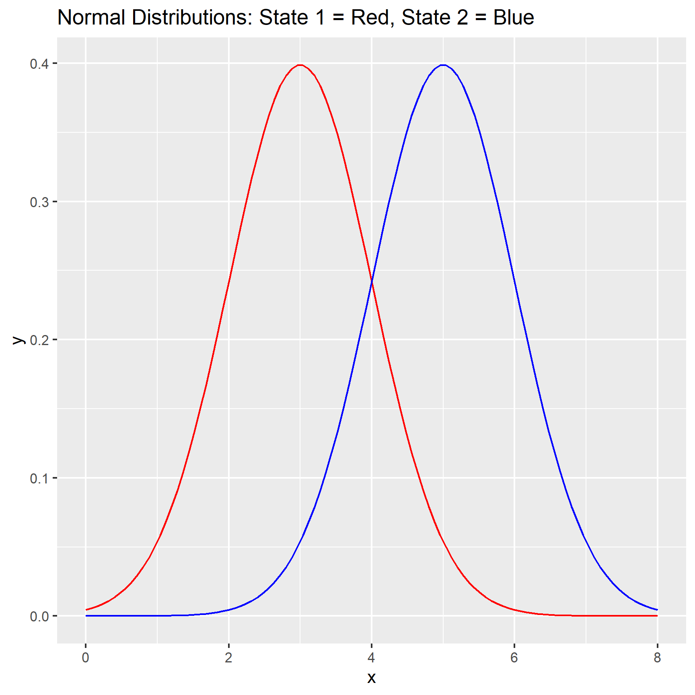
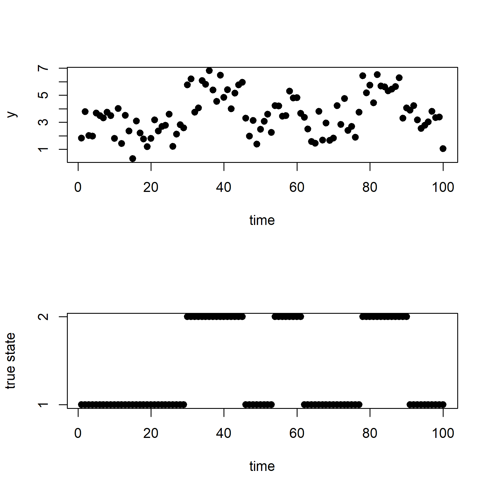
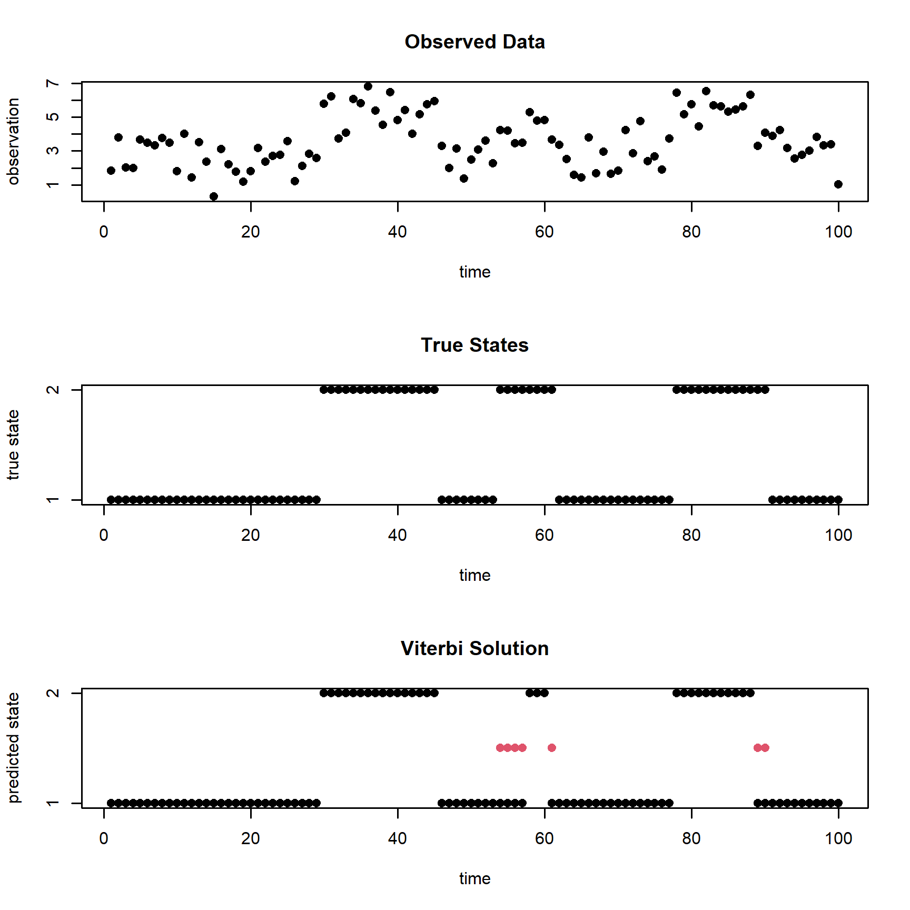
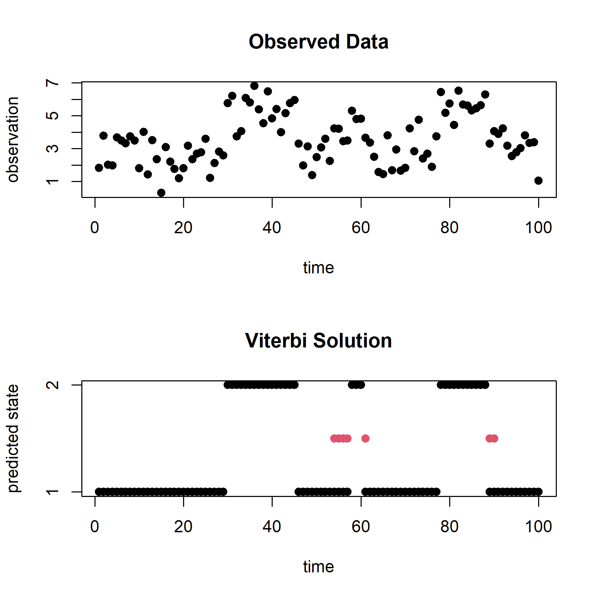
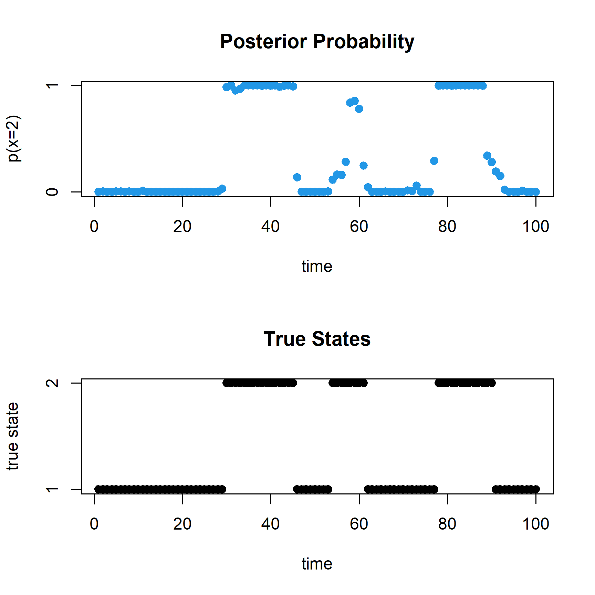

Code
library(tidyverse)May 17, 2023
Motivation: Hidden Markov Models are useful for when you have a sequence of observed data that is a function of unobservable states which change over time. You may be interested in estimating the state time-series which gave rise to the observations.
As an example: perhaps your shopping habits change as a function of your current mood. A researcher is unable to directly observe your mood at any given moment, but they are able to observe your shopping habits over time. Perhaps you shop more when you are in a happy mood compared to a sad mood. By modeling the data using a HMM, the researcher can obtain estimates of the unobservable states and how they may be changing over time.

More formally, Hidden Markov Models are models that include unobservable (i.e., hidden) states (\(x_1, x_2, ...x_n\)) which can transition to one another over time. Each state is associated with an emission model (\(p(y_t|x_t,\theta)\); where \(\theta\) are the parameters of the emission model) that link unobservable states (\(x_t\)) to observations (\(y_t\)). In particular, state transitions are assumed to satisfy the Markov property where the state model is associated with a set of parameters (\(\omega\)) consisting of transition probabilities (\(\nu\)) and initial state probabilities (\(\pi\)). In this tutorial we explore discrete state and discrete time HMM models.
Looking at the diagram:  The initial state probabilities (\(\pi = [0.6, 0.4]\)) are denoted by the arrows from the very top pointing towards “Rainy” and “Sunny”. The transition probabilities are the arrows between the states (note: states can transition to themselves). Here the emission model is a multionomial distribution over the observable states (each hidden state has its own multinomial probability parameters) which are walking, shopping, and cleaning.
Hidden Markov Models can be viewed as an extension of mixture models where the mixture components can switch over time (i.e., the hidden state changes over time).
In this example, I will generate data from two normal distributions (each with different means, but both with variance of 1 for simplicity), where the distribution I am sampling from will change over time (based on the transition probabilities between the states). From this simulated data, I will then fit a HMM model to see how accurately it can estimate which distribution is being sampled from at each time point.
To begin, here I first depict the two normal distributions which I will sample from:

We see that there is overlap between the distributions, this means that estimation of which state the sampled observations come from will have uncertainty.
Here I generate a sequence of observations, starting with an initial probability distribution of \(\pi = [0.5, 0.5]\), and a probability transition matrix of: \(\nu = [0.9,0.1;0.1,0.9]\) (stay probability of 0.9 for both states, and switch probability of 0.1 for both states).
set.seed(518) #for reproducability
n <- 100 # numobs
m <- 2 # numstates
mu <- c(3,5) #means of normal distribution
sig <- c(1,1) #st devs; together these are theta, underlying parameters
nu <- rbind(c(0.9,0.1),c(0.1,0.9)) #transition probability matrix
marg <- c(0.5,0.5) #this is pi, the initial distribution
X.norm <- rep(NA,n)
Y.norm <- rep(NA,n)
X.norm[1] <- 1
Y.norm[1] <- rnorm(1,mu[1],sig[1])
for (i in 2:n){
u <- runif(1)
if (X.norm[i-1] == 1){
X.norm[i] <- ifelse(u > nu[1,1],2,1)
}
if (X.norm[i-1] == 2){
X.norm[i] <- ifelse(u > nu[2,2],1,2)
}
if (X.norm[i]==1){
Y.norm[i] <- rnorm(1,mu[1],sig[1])
}
if (X.norm[i]==2){
Y.norm[i] <- rnorm(1,mu[2],sig[2])
}
}
par(mfrow=c(2,1))
plot(1:n,Y.norm,pch=19,ylab= "y", xlab = "time")
ytick <- c(1,2)
plot(1:n,X.norm,pch=19, ylab = "true state", xlab = "time",yaxt = "n")
axis(2, at = c(1,2))
Look at the top row, we see that the observations fluctuate over time according to the true underlying state/distribution I sampled from. However, just looking at the observation we aren’t able to fully tell what the underlying state is for that time-point because the distributions aren’t entirely non-overlapping (this is especially salient at the time points where there are transitions from one state to the other).
Now, let’s fit a HMM model to the data.
There are multiple ways to fit a HMM model to this data. One method to fit the data is called the “Viterbi Algorithm” which is a dynamic programming algorithm that recursively tries to calculate the optimal sequence of states (\(\hat{x}\)) conditional on particular values of \(\theta\) and \(\omega\) (i.e., the state model and emission model parameters). Here I condition on the true parameters.
set.seed(518) #for reproducability
norm.density <- function(obs,state){
if (state==1){
out <- dnorm(obs,mean=mu[1],sd=sig[1])
}
if (state==2){
out <- dnorm(obs,mean=mu[2],sd=sig[2])
}
out
} #probability that given a state, that you got that observation y.
delta <- matrix(NA,nrow=n,ncol=m)
## Initialization:
for (i in 1:m){
delta[1,i] <- marg[i]*norm.density(Y.norm[1],i)
}
## Recursion:
for (t in 2:n){
for (i in 1:m){
temp <- rep(NA,m)
for (j in 1:m){
temp[j] <- delta[t-1,j]*nu[j,i]*norm.density(Y.norm[t],i)
}
delta[t,i] <- max(temp)
}
}
## Tracing Back:
Xhat <- rep(NA,n)
Xhat[n] <- which(delta[n,]==max(delta[n,]))
for (t in (n-1):1){
temp <- rep(NA,m)
for (j in 1:m){
temp[j] <- delta[t,j]*nu[j,Xhat[t+1]]
}
Xhat[t] <- which(temp==max(temp))
}
### checking our inferred states
par(mfrow=c(3,1))
plot(1:n,Y.norm,pch=19,main="Observed Data", ylab = "observation", xlab = "time")
plot(1:n,X.norm,pch=19,main="True States", ylab = "true state", xlab = "time",yaxt = "n")
axis(2, at = c(1,2))
plot(1:n,Xhat,pch=19,main="Viterbi Solution", ylab = "predicted state", xlab = "time",yaxt = "n")
axis(2, at = c(1,2))
for (i in 1:n){
if (Xhat[i] != X.norm[i]){
points(i,1.5,col=2,pch=19)
}
}
We see that the Viterbi Solution is quite accurate most of the time, with errors (time points with errors indicated as red dots) occuring close to the timepoints where the model transitioned from one state to the next. However, there are cons:
The Viterbi algorithm is conditional on a set of parameters for both your emission model and state model, and in practice those are unknown.
Additionally, the Viterbi algorithm calculates the optimal path \(\hat{x}\), which is only a point estimate given the observations. You may also be interested in estimating the uncertainty in \(x\) as well.
The second method I will present is a Bayesian approach leveraging the forward-backward combined with Gibbs Sampler. The forward-backward algorithm allows one to sample likely state paths (\(x\)) given the observations, and from these sampled paths we are able to employ the Gibbs Sampler (a Markov-Chain-Monte-Carlo algorithm) to obtain posterior distribution samples for our parameters of interest.
set.seed(518) #for reproducability
numsamp <- 10000
X.samp <- matrix(NA,nrow=numsamp,ncol=n)
nu.samp <- matrix(NA,nrow=numsamp,ncol=m*m)
pi.samp <- matrix(NA,nrow=numsamp,ncol=m)
mu.samp <- matrix(NA,nrow=numsamp,ncol=m)
curnu <- rbind(c(0.75,0.25),c(0.25,0.75)) #specify initial values
curpi <- c(0.5,0.5)
curmu <- c(2,4)
curX <- rep(NA,n)
norm.density <- function(obs,state,mu){
if (state==1){
out <- dnorm(obs,mean=mu[1],sd=1)
}
if (state==2){
out <- dnorm(obs,mean=mu[2],sd=1)
}
out
}
for (iter in 1:numsamp){
#### Forward Algorithm ####
alpha <- matrix(NA,nrow=n,ncol=m)
for (i in 1:m){
alpha[1,i] <- curpi[i]*norm.density(Y.norm[1],i,curmu)
}
for (t in 2:n){
for (i in 1:m){
temp <- rep(NA,m)
for (j in 1:m){
temp[j] <- alpha[t-1,j]*curnu[j,i]*norm.density(Y.norm[t],i,curmu)
}
alpha[t,i] <- sum(temp)
}
}
#### Backwards Sampling ####
probvec <- alpha[n,]/sum(alpha[n,])
curX[n] <- sample(1:m,size=1,prob=probvec)
for (t in (n-1):1){
probvec <- rep(NA,m)
for (i in 1:m){
probvec[i] <- alpha[t,i]*curnu[i,curX[t+1]]
}
probvec <- probvec/sum(probvec)
curX[t] <- sample(1:m,size=1,prob=probvec)
}
#### Calculating N matrix ####
Nmat <- matrix(NA,nrow=m,ncol=m)
for (j in 1:m){
for (k in 1:m){
Nmat[j,k] <- 0
for (t in 2:n){
if (curX[t-1]==j && curX[t]==k){
Nmat[j,k] <- Nmat[j,k] + 1
}
}
}
}
#### Sampling Nu rows from Dirichlet (via Gammas) ####
for (j in 1:m){
for (k in 1:m){
curnu[j,k] <- rgamma(1,shape=(Nmat[j,k]+1),rate=1)
}
curnu[j,] <- curnu[j,]/sum(curnu[j,])
}
#### Calculating N vector ####
Nvec <- rep(NA,m)
for (j in 1:m){
Nvec[j] <- sum(curX==j)
}
#### Sampling pi from Dirichlet (via Gammas) ####
for (j in 1:m){
curpi[j] <- rgamma(1,shape=(Nvec[j]+1),rate=1)
}
curpi<- curpi/sum(curpi)
#### Sampling means of emission model
for (j in 1:m){
curmean <- mean(Y.norm[curX==j])
curvar <- 1/sum(curX==j)
curmu[j] <- rnorm(1,curmean,sqrt(curvar))
}
#### Storing parameter values
X.samp[iter,] <- curX
nu.samp[iter,] <- as.vector(curnu)
pi.samp[iter,] <- curpi
mu.samp[iter,] <- curmu
}
X.samp1 <- X.samp
nu.samp1 <- nu.samp
pi.samp1 <- pi.samp
mu.samp1 <- mu.samp
### re-running with different starting values
curnu <- rbind(c(0.5,0.5),c(0.5,0.5))
curpi <- c(0.25,0.75)
curmu <- c(1,5)
curX <- rep(NA,n)
X.samp2 <- X.samp
nu.samp2 <- nu.samp
pi.samp2 <- pi.samp
mu.samp2 <- mu.samp
# checking convergence using our multiple chains
# par(mfrow=c(3,1))
ymin<-min(mu.samp1[,1],mu.samp2[,1])
ymax<-max(mu.samp1[,1],mu.samp2[,1])
# plot(1:numsamp,mu.samp1[,1],type="l",col=2,ylim=c(ymin,ymax))
# lines(1:numsamp,mu.samp2[,1],col=3)
ymin<-min(mu.samp1[,2],mu.samp2[,2])
ymax<-max(mu.samp1[,2],mu.samp2[,2])
# plot(1:numsamp,mu.samp1[,2],type="l",col=2,ylim=c(ymin,ymax))
# lines(1:numsamp,mu.samp2[,2],col=3)
ymin<-min(nu.samp1[,2],nu.samp2[,2])
ymax<-max(nu.samp1[,2],nu.samp2[,2])
# plot(1:numsamp,nu.samp1[,2],type="l",col=2,ylim=c(ymin,ymax))
# lines(1:numsamp,nu.samp2[,2],col=3)
### throwing out first 1000 samples as burnin and combine chains
postburn <- 1001:numsamp
X.samp <- rbind(X.samp1[postburn,],X.samp2[postburn,])
mu.samp <- rbind(mu.samp1[postburn,],mu.samp2[postburn,])
nu.samp <- rbind(nu.samp[postburn,],nu.samp2[postburn,])
pi.samp <- rbind(pi.samp1[postburn,],pi.samp2[postburn,])
### checking acf
acf(mu.samp[,1], plot=FALSE)
acf(mu.samp[,2], plot=FALSE)
acf(nu.samp[,1], plot=FALSE)
acf(nu.samp[,2], plot=FALSE)
acf(nu.samp[,3], plot=FALSE)
acf(nu.samp[,4], plot=FALSE)
acf(pi.samp[,1], plot=FALSE)
acf(pi.samp[,2], plot=FALSE)
### thinning
temp <- 5*(c(1:(length(mu.samp[,1])/5)))
X.samp.thin <- X.samp[temp,]
mu.samp.thin <- mu.samp[temp,]
nu.samp.thin <- nu.samp[temp,]
pi.samp.thin <- pi.samp[temp,]
### checking acf
acf(mu.samp.thin[,1], plot=FALSE)
acf(mu.samp.thin[,2], plot=FALSE)
acf(nu.samp.thin[,1], plot=FALSE)
acf(nu.samp.thin[,2], plot=FALSE)
acf(nu.samp.thin[,3], plot=FALSE)
acf(nu.samp.thin[,4], plot=FALSE)
acf(pi.samp.thin[,1], plot=FALSE)
acf(pi.samp.thin[,2], plot=FALSE)
X.final <- X.samp.thin
mu.final <- mu.samp.thin
nu.final <- nu.samp.thin
pi.final <- pi.samp.thin
### calculating posterior probabilities of hidden states
X.postprob <- rep(NA,n)
for (j in 1:n){
X.postprob[j] <- sum(X.final[,j]==2)/length(X.final[,1])
}### checking our inferred states
par(mfrow=c(2,1))
plot(1:n,Y.norm,pch=19,main="Observed Data", ylab = "observation", xlab = "time")
plot(1:n,Xhat,pch=19,main="Viterbi Solution", ylab = "predicted state", xlab = "time",yaxt = "n")
axis(2, at = c(1,2))
for (i in 1:n){
if (Xhat[i] != X.norm[i]){
points(i,1.5,col=2,pch=19)
}
}

Looking at the the posterior distribution samples, we see that the model is confident for segments where the state is stable, and less confident for points where there is a transition between states. Critically, we are now able to quantify how uncertain the model is using these posterior distribtuion samples.
I presented a simplified example of data generated from two noisy normal distributions, but HMM are quite versatile. They are used in speech recognition, part-of-speech labeling, stock market prediction (ex: bull market vs. bear market states), and gene sequence analyses.
In event cognition literature, HMMs have been used as an event segmentation model, classifying event boundaries as time points where there is a transition from one stable brain state to another (see this paper).
Additionally, there are other methods for estimating HMM models such as the Baum-Welch algorithm which uses the EM combined with the forward-backward algorithm.
Potentially useful R packages (which I am unfamiliar with) to fit HMM Models include:
If you’re interested in depmixS4 this tutorial which goes through a simple example may be useful. The depmixs4 package by default uses the Baum-Welch algorithm to fit HMM models.
Thanks to Shane Jensen whose lectures and code in STAT442 (Intro to Bayesian Data Analysis) I referenced in making this blog post.